Bài 4: Lưu và chia sẻ sổ làm việc
Bài 4: Lưu và chia sẻ Workbook
/en/excel/tạo-và-mở-workbooks/nội dung/
Giới thiệu
Bất cứ khi nào bạn tạo một sổ làm việc mới trong Excel, bạn sẽ cần biết cáchlưusổ làm việc đó để truy cập và chỉnh sửa sổ làm việc đó sau này. Giống như các phiên bản Excel trước, bạn có thể lưu tệpcục bộvào máy tính của mình. Bạn cũng có thể lưu sổ làm việc vàođám mâybằngOneDrive, cũng nhưxuấtvàchia sẻsổ làm việc với người khác trực tiếp từ Excel.
Xem video bên dưới để tìm hiểu thêm về cách lưu và chia sẻ sổ làm việc trong Excel.
Giới thiệu về OneDrive
Bất cứ khi nào bạn mở hoặc lưu sổ làm việc, bạn sẽ có tùy chọn sử dụngOneDrive, đây là dịch vụ lưu trữ tệp trực tuyến đi kèm với tài khoản Microsoft của bạn. Để bật tùy chọn này, bạn cầnđăng nhậpvào Office. Để tìm hiểu thêm, hãy truy cập bài học của chúng tôi về Tìm hiểu về OneDrive.
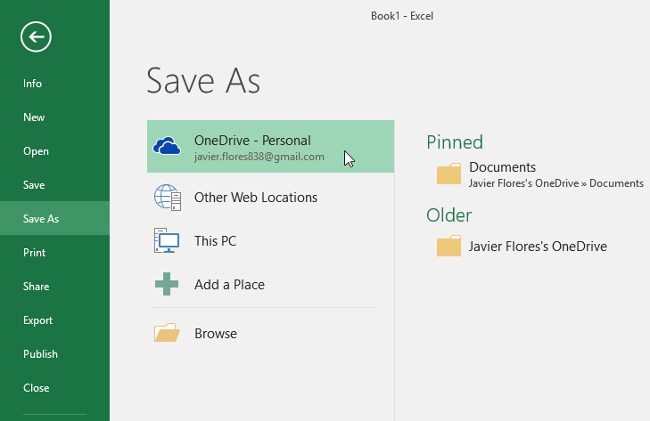
Lưu và lưu dưới dạng
Excel cung cấp hai cách để lưu tệp:SavevàSave As. Các tùy chọn này hoạt động theo những cách tương tự nhau, với một số khác biệt quan trọng:
- Save: Khi bạn tạo hoặc chỉnh sửa sổ làm việc, bạn sẽ sử dụng lệnhSaveđể lưu các thay đổi của mình. Bạn sẽ sử dụng lệnh này hầu hết thời gian. Khi lưu tệp, lần đầu tiên bạn chỉ cần chọn tên tệp và vị trí. Sau đó, bạn có thể chỉ cần nhấp vào lệnh Lưu để lưu nó với cùng tên và vị trí.
- Save As: Bạn sẽ sử dụng lệnh này để tạobản saocủa sổ làm việc trong khi vẫn giữ bản gốc. Khi sử dụng Lưu dưới dạng, bạn cần chọn tên và/hoặc vị trí khác cho phiên bản đã sao chép.
Để lưu một sổ làm việc:
Điều quan trọng làlưu sổ làm việc của bạnbất cứ khi nào bạn bắt đầu một dự án mới hoặc thực hiện các thay đổi đối với dự án hiện có. Lưu sớm và thường xuyên có thể giúp công việc của bạn không bị thất lạc. Bạn cũng cần chú ý đếnnơi bạn lưusổ làm việc để có thể dễ dàng tìm thấy sau này.
- Xác định vị trí và chọn lệnhSavetrênQuickAccess Toolbar.
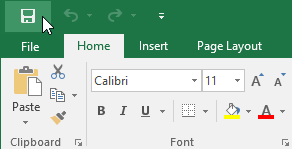
2. Nếu bạn lưu tệp lần đầu tiên, khungSave Assẽ xuất hiện trongBackstageview. 3. Sau đó, bạn cần chọnnơi lưutệp và đặt cho nó mộttên tệp. Để lưu sổ làm việc vào máy tính của bạn, hãy chọnMáy tính, sau đó nhấp vàoDuyệt. Bạn cũng có thể bấm vàoOneDriveđể lưu tệp vào OneDrive của mình.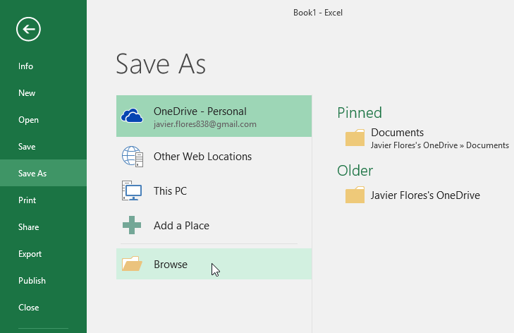
4. Hộp thoạiSave Assẽ xuất hiện. Chọnvị trínơi bạn muốn lưu sổ làm việc. 5. Nhậptên tệpcho sổ làm việc, sau đó nhấp vàoLưu.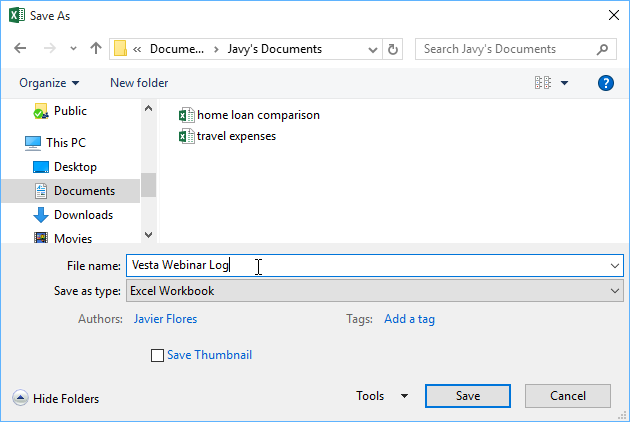
6. Sổ làm việc sẽ đượclưu. Bạn có thể bấm lại vào lệnhSaveđể lưu các thay đổi khi sửa đổi sổ làm việc.Sử dụng Save As để tạo bản sao
Nếu bạn muốn lưuphiên bản kháccủa sổ làm việc trong khi vẫn giữ bản gốc, bạn có thể tạobản sao. Ví dụ: nếu bạn có tệp có tênDữ liệu bán hàng, bạn có thể lưu tệp đó dưới dạngDữ liệu bán hàng 2để bạn có thể chỉnh sửa tệp mới và vẫn tham khảo lại phiên bản gốc.
Để thực hiện việc này, hãy nhấp vào lệnhSave Astrong chế độ xem Backstage. Giống như khi lưu tệp lần đầu tiên, bạn sẽ cần chọnnơi lưutệp và đặt cho nó mộttên tệpmới.
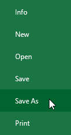
Để thay đổi vị trí lưu mặc định:
Nếu bạn không muốn sử dụngOneDrive, bạn có thể cảm thấy thất vọng vì OneDrive được chọn làm vị trí mặc định khi lưu. Nếu bạn thấy bất tiện khi chọnMáy tínhmỗi lần, bạn có thể thay đổivị trí lưu mặc địnhđểMáy tínhđược chọn theo mặc định.
- Nhấp vào tabTệpđể truy cậpHậu trườngxem.
 2. Nhấp vàoTùy chọn.
2. Nhấp vàoTùy chọn.
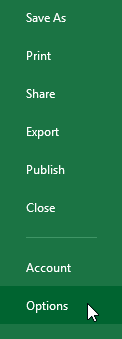
3. Hộp thoạiTùy chọn Excelsẽ xuất hiện. ChọnLưu,chọn hộpbên cạnhLưu vào máy tính theo mặc định, sau đó nhấp vàoOK. Vị trí lưu mặc định sẽ được thay đổi.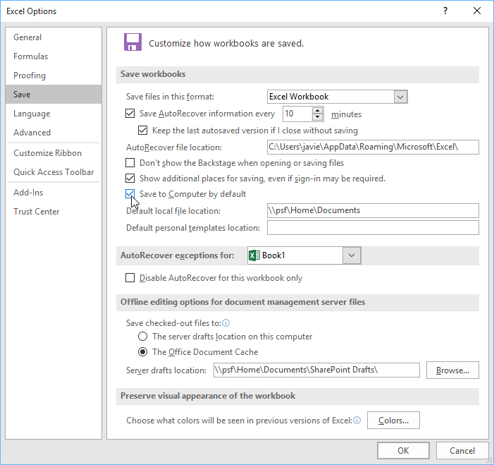
Tự động Phục hồi
Excel tự động lưu sổ làm việc của bạn vào một thư mục tạm thời trong khi bạn đang làm việc với chúng. Nếu bạn quên lưu các thay đổi hoặc nếu Excel gặp sự cố, bạn có thể khôi phục tệp bằngTự động Phục hồi.
Để sử dụng Tự động Phục hồi:
- Mở Excel. Nếu tìm thấyphiên bản lưu tự độngcủa một tệp, khungTài liệuPhục hồisẽ xuất hiện.
- Bấm đểmởmột tập tin có sẵn. Sổ làm việc sẽ đượcphục hồi.
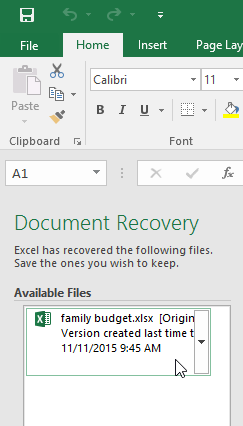
Theo mặc định, Excel sẽ tự động lưu cứ sau 10 phút. Nếu bạn đang chỉnh sửa sổ làm việc dưới 10 phút, Excel có thể không tạo phiên bản lưu tự động.
Nếu bạn không thấy tệp mình cần, bạn có thể duyệt tất cả các tệp được lưu tự động từBackstageview. Chỉ cần chọn tabTệp, nhấp vàoQuản lý sổ làm việc, sau đó chọnKhôi phục sổ làm việc chưa được lưu.
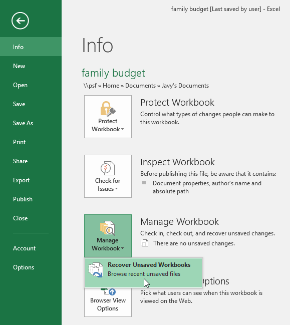
Xuất sổ làm việc
Theo mặc định, sổ làm việc Excel được lưu ở dạng tệp.xlsx. Tuy nhiên, có thể đôi khi bạn cần sử dụngloại tệp khácnhưPDFhoặcsổ làm việc Excel 97-2003. Thật dễ dàng đểxuấtsổ làm việc của bạn từ Excel sang nhiều loại tệp khác nhau.
Để xuất sổ làm việc dưới dạng tệp PDF:
Xuất sổ làm việc của bạn dưới dạngtài liệu Adobe Acrobat, thường được gọi làtệp PDF, có thể đặc biệt hữu ích nếu bạn đang chia sẻ sổ làm việc với người không có Excel. PDF sẽ giúp người nhận có thể xem nhưng không thể chỉnh sửa nội dung sổ làm việc của bạn.
- Nhấp vào tabTệpđể truy cậpHậu trườngxem.
- Nhấp vàoXuất, sau đó chọnTạo PDF/XPS.
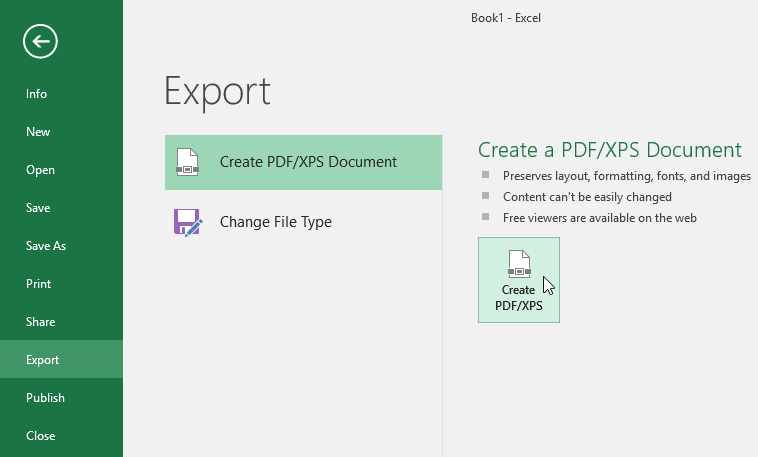
3. Hộp thoạiSave Assẽ xuất hiện. Chọnvị trínơi bạn muốn xuất sổ làm việc, nhậptên tệp, sau đó nhấp vàoXuất bản.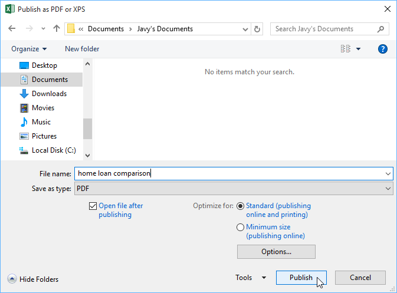
Theo mặc định, Excel sẽ chỉ xuấtbảng tínhhoạt động*. Nếu bạn có nhiều trang tính và muốn lưu tất cả chúng vào cùng một tệp PDF, hãy nhấp vào*Tùy chọntrong hộp thoạiSave As. Hộp thoạiTùy chọnsẽ xuất hiện. ChọnToàn bộ sổ làm việc, sau đó nhấp vàoOK.
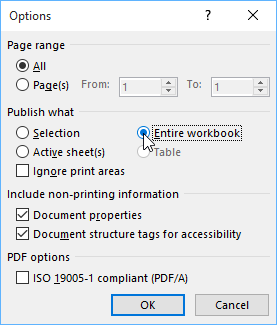
Bất cứ khi nào bạn xuất sổ làm việc dưới dạng PDF, bạn cũng cần xem xét cách dữ liệu sổ làm việc của bạn sẽ xuất hiện trên mỗitrangcủa tệp PDF, giống nhưinsổ làm việc. Hãy truy cập bài học Bố cục và In Trang của chúng tôi để tìm hiểu thêm về những điều cần cân nhắc trước khi xuất sổ làm việc dưới dạng PDF.
Để xuất sổ làm việc sang các loại tệp khác:
Bạn cũng có thể thấy hữu ích khi xuất sổ làm việc của mình sang các loại tệp khác, chẳng hạn nhưsổ làm việc Excel 97-2003nếu bạn cần chia sẻ với những người sử dụng phiên bản Excel cũ hơn hoặc.tệp CSVnếu bạn cầnphiên bản văn bản thuầncủa sổ làm việc.
- Nhấp vào tabTệpđể truy cậpHậu trườngxem.
- Nhấp vàoXuất, sau đó chọnThay đổi loại tệp.
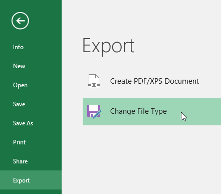
3. Chọn mộttệploạichung, sau đó nhấp vàoLưuDưới dạng.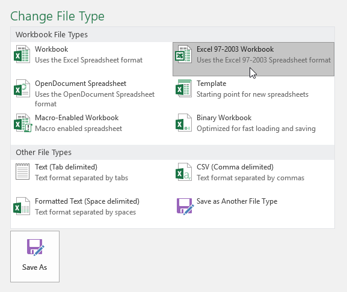
4. Hộp thoạiSave Assẽ xuất hiện. Chọnvị trínơi bạn muốn xuất sổ làm việc, nhậptên tệp, sau đó nhấp vàoLưu.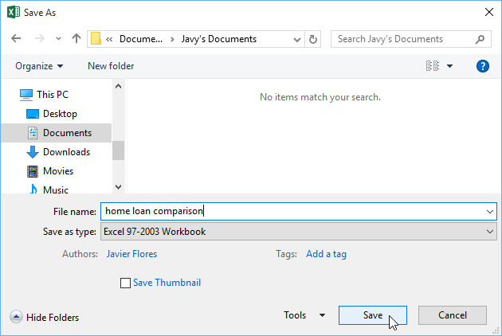
Bạn cũng có thể sử dụng trình đơn thả xuốngSave as type:trong hộp thoạiSave Asđể lưu sổ làm việc ở nhiều loại tệp khác nhau.
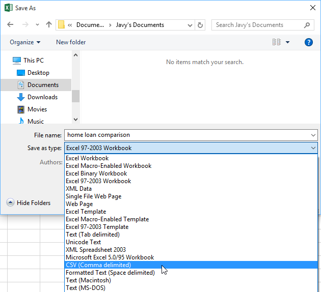
Chia sẻ sổ làm việc
Excel giúp việcchia sẻvà cộng táctrên sổ làm việc bằng cách sử dụngOneDrivetrở nên dễ dàng. Trước đây, nếu bạn muốn chia sẻ tệp với ai đó, bạn có thể gửi tệp đó dưới dạng tệp đính kèm email. Mặc dù thuận tiện nhưng hệ thống này cũng tạonhiều phiên bảncủa cùng một tệp, điều này có thể gây khó khăn cho việc sắp xếp.
Khi bạn chia sẻ sổ làm việc từ Excel, thực tế là bạn đang cấp cho người khác quyền truy cập vàochính xác tệp. Điều này cho phép bạn và những người bạn chia sẻchỉnh sửa cùng một sổ làm việcmà không cần phải theo dõi nhiều phiên bản.
Để chia sẻ một sổ làm việc, trước tiên sổ làm việc đó phải đượclưuvàocủa bạnOneDrive.
Để chia sẻ một sổ làm việc:
- Nhấp vào tabTệpđể truy cậpHậu trườngxem, sau đó nhấp vàoChia sẻ.
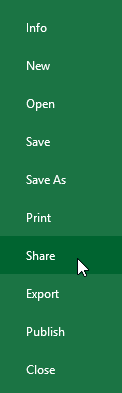
2. Excel sẽ trở về chế độ xem Bình thường và mở bảngChia sẻở bên phải cửa sổ. Từ đây, bạn có thể mời mọi người chia sẻ tài liệu của mình, xem danh sách những người có quyền truy cập vào tài liệu và đặt xem họ có thể chỉnh sửa hay chỉ xem tài liệu.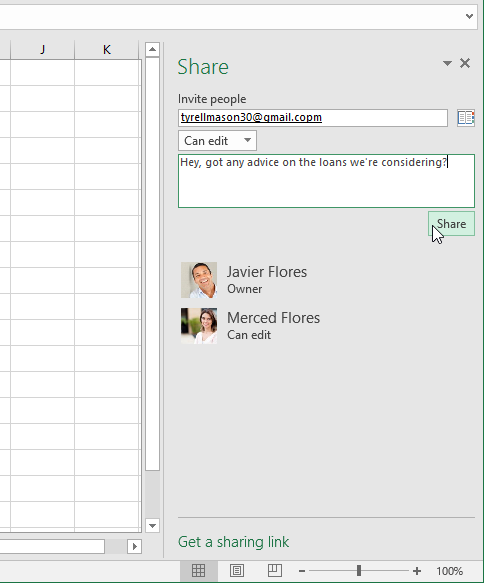
Thử thách!
- Mở sổ làm việc thực hành của chúng tôi.
- Sử dụng tùy chọnSave As, tạo một bản sao của sổ làm việc và đặt tên làThử thách thực hành tiết kiệm. Bạn có thể lưu bản sao vào một thư mục trên máy tính hoặc vàoOneDrivecủa mình.
- Xuấtsổ làm việc dưới dạng tệpPDF.
/en/excel/cell-basics/content/